第二章 基带信号调制与解调
一、数字基带传输基础
1.1 核心定义与研究价值
- 基带信号：频率范围从直流到有限值的低通信号，未经载波调制，频谱从零频/很低频率开始。
- 数字基带传输系统：不经载波调制，直接传输数字基带信号的系统，适用于近距离传输（局域网、电话系统等）。
- 研究价值：
- 基带传输是数字通信的基础，带通传输系统必先将数字序列调制成基带信号，再做载波调制；
- 基带传输可直接在双绞线、电缆等信道实现，有大量实际工程应用。
1.2 数字基带传输系统完整链路
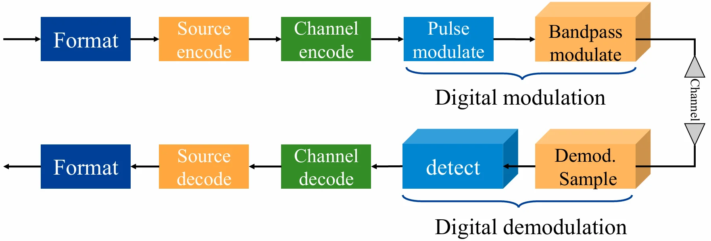
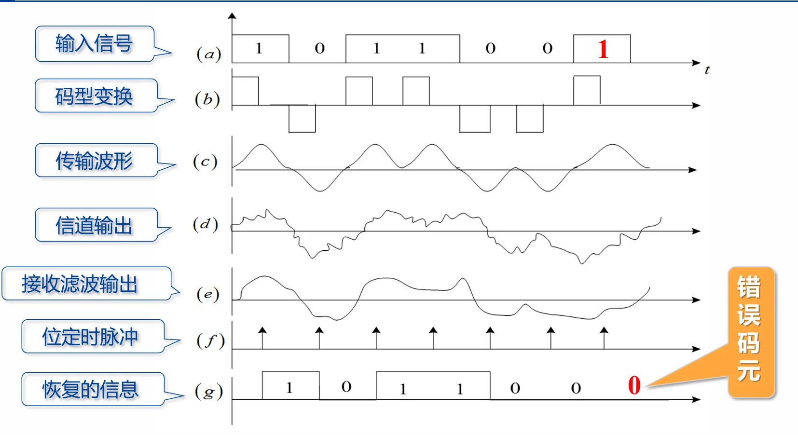
各模块核心功能：
| 模块 | 核心作用 |
|------|----------|
| 发送滤波器（信道信号形成器） | 将原始基带信号转换为适配信道传输的波形，匹配信道、减少码间串扰、利于同步提取 |
| 传输信道 | 基带信号传输通道，引入噪声与非理想特性畸变 |
| 接收滤波器 | 滤除带外噪声，对信道特性均衡，输出利于抽样判决的波形 |
| 抽样判决器 | 对接收波形在特定时刻抽样，与门限比较判决，再生原始基带信号 |
| 同步提取 | 提取抽样用的位定时脉冲，保证判决时刻准确 |
1.3 常用数字基带信号波形
课件中6类核心波形，重点关注特性与工程应用场景：
1. 单极性非归零波形（NRZ）
- 特点：极性单一，0对应0电平，1对应正电平，有直流和低频分量
- 应用：设备内部、数字调制器中
2. 双极性非归零波形（NRZ）
- 特点：0对应负电平，1对应正电平，等概时无直流分量，抗干扰能力强
- 应用：RS-232C接口标准、数字调制器中
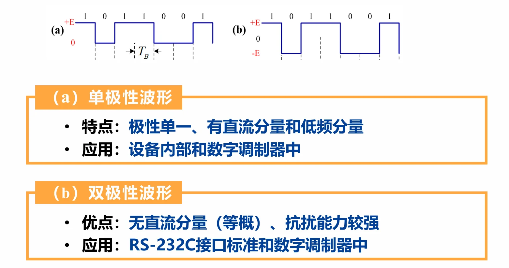
-
单极性归零码（RZ）
- 特点：高电平持续时间小于码元周期，常用半占空码（占空比50%），可直接提取位定时信号
- 应用：同步时钟提取的过渡码型
-
双极性归零码
- 特点：兼具双极性和归零码特性，易识别码元起止时刻，便于同步
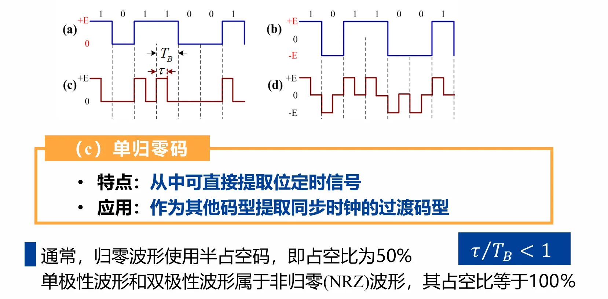
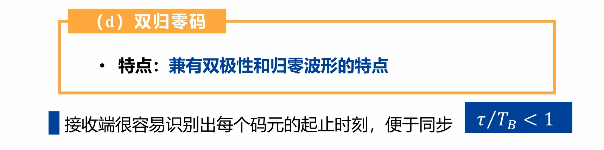
- 差分波形（相对码波形）
- 特点：用相邻码元电平的跳变/不变表示信息，分为传号差分（1跳变、0不变）、空号差分（0跳变、1不变）
- 优点：消除设备初始状态不确定性带来的影响
- 多电平波形（多进制波形）
- 特点：一个脉冲携带多个比特信息，例：四电平波形00→+3E、01→+E、10→-E、11→-3E
- 优点：码元速率固定时，传信率更高
- 应用：高速数据传输系统
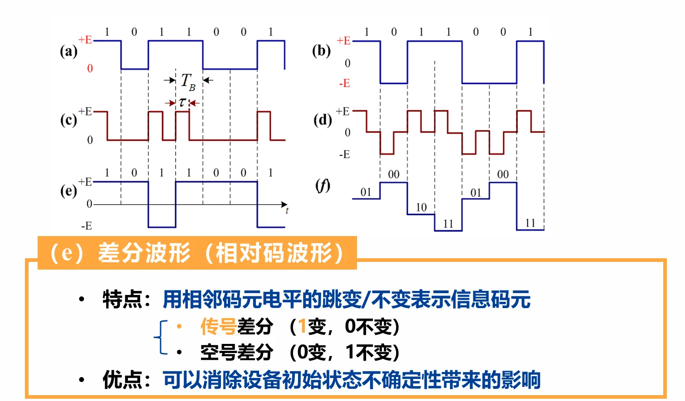
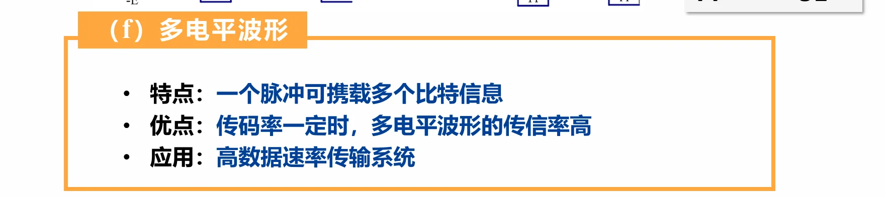
1.4 数字基带信号的数学表达式
若各码元波形相同、取值不同，基带信号可表示为随机脉冲序列：
- \(a_n\)：第n个码元的电平取值（随机量）
- \(g(t)\)：单码元的脉冲波形（如矩形脉冲、升余弦脉冲），对应第1章的\(g_T(t)\)，\(0 < t < T\)，\(T\)是码元持续时间。
- \(T_B\)：码元持续时间（码元周期），对应第1章的\(T_s\)
这个东西就是我一直疑惑的数字序列在硬件中长什么样的问题，原来还是转换为连续信号，一个码元对应持续一定时间\(T_B\)的脉冲波形
通用随机序列表达式：
为什么数字序列也会是随机的？
数字序列还没有被调制发射、噪声没有介入，为什么课件说数字序列和基带信号也是随机的呢？
要理解这个问题，我们需要做一个视角的转换。在通信原理中，我们说数字序列是“随机的”，并不是说它是一堆乱码，而是基于信息论（Information Theory）和系统设计者的角度出发的。
通信的鼻祖克劳德·香农（Claude Shannon）提出过一个伟大的概念：信息，就是用来消除不确定性的东西。
- 如果数据不随机（可预测）： 假设你要发的数据是永远重复的
1010101010...，或者接收端早就知道你要发什么。既然接收端都能猜出来，那你其实根本就不需要发这段数据，这段数据携带的信息量是 0。 - 如果数据是随机的（不可预测）： 正是因为接收端不知道下一个比特是
0还是1（对接收端来说是随机的、未知的），当你真正把这个0或1传过去时，接收端才获得了“信息”。
因此，真正有价值、需要传输的数据，在被接收到之前，对接收端而言必定表现出极强的随机性（不可预测性）。
作为系统设计者，我们不能针对某一个特定的文件去设计系统。我们只能认为：输入进来的数据流 \(\{a_n\}\) 是一抛硬币产生的结果。 每一个码元是取 +E 还是 -E，服从某种概率分布（比如各占 50%）。
我们是用概率论和随机过程的数学工具，来确保这个系统在统计意义上（不管用户传什么）都能表现良好。
二、基带信号解调与检测基础
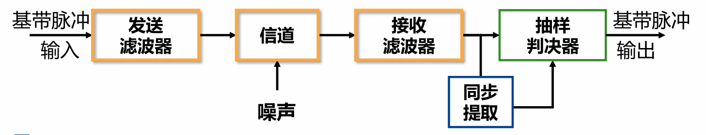
2.1 传输误差的两大核心来源
- 加性高斯白噪声（AWGN）
- 加性：以叠加方式干扰信号；
- 白：关注频段内功率谱密度平坦；
- 高斯：幅度取值服从高斯分布
- 码间串扰（ISI）
- 成因：发送端、信道、接收端的非理想滤波特性，导致码元波形畸变、拖尾，对当前码元判决造成干扰
2.2 解调与检测的核心定义
- 解调：恢复\(t=nT\)时刻采样的波形，核心是通过接收滤波器，在无码间串扰下获得最大信噪比的基带脉冲，可选均衡器补偿信道失真。
- 检测：采样判决过程，将采样值与判决门限比较，选择最可能的发送数字符号，核心是最小化判决错误概率。
2.3 简化基带传输模型
\(发送符号 \to s_i(t) \to 信道+噪声n(t) \to r(t)=s_i(t)*h_c(t)+n(t) \to 接收滤波h_r(t) \to z(t) \to 抽样判决(t=T) \to 估计符号\)
- 理想信道下：\(r(t)=s_i(t)+n(t)\)，\(t=T\)时刻采样值\(z(T)=s_i(T)+n_0(T)\)
2.4 模块作用
发送滤波器，即信道信号形成器
• 作用：原始基带信号 → 适合于信道传输的基带信号。
• 目的：匹配信道，减少码间串扰，利于同步提取
信道：给基带信号提供传输通道
接收滤波器
• 作用：滤除带外噪声，对信道特性均衡
• 目的：使输出的基带波形有利于抽样判决
抽样判决器
• 作用：对接收滤波器的输出波形进行抽样判决
• 目的：确定发送的信码序列，再生基带信号
同步提取
• 作用：提取用于抽样的位定时脉冲
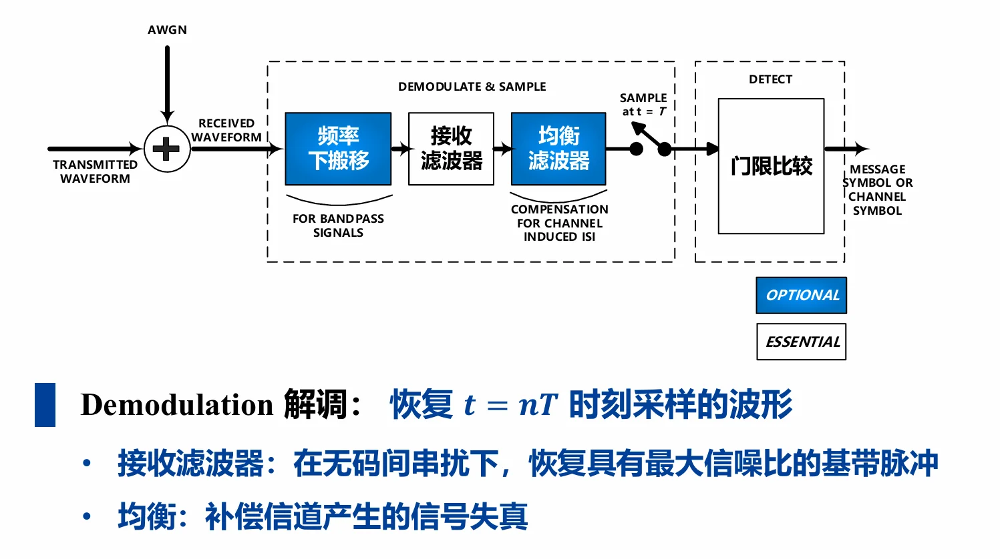
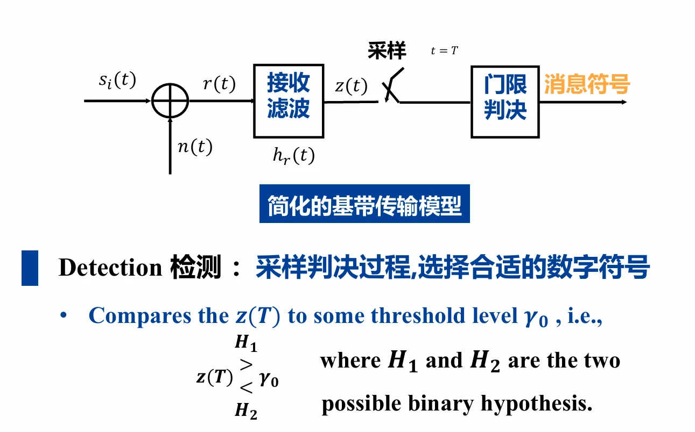
三、信号与噪声核心模型
3.1 信号的表示
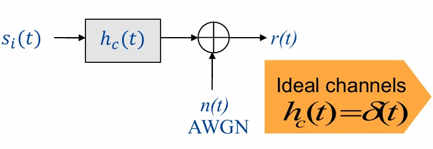
3.1.1 二进制发送信号
对于一个码元：\( s_i(t) \) 表示第 \( i \) 个码元在时域上的发送波形。
- \( s_1(t) \) 和 \( s_2(t) \) 是两个不同的基带脉冲波形，用来分别代表二进制“1”和“0”。
- 它们是在一个码元周期 \( T \) 内定义的确定信号，是单个码元的信号波形，是承载“1”或“0”信息的物理载体。
- 最常见的例子：
- 单极性NRZ码：\( s_1(t) = A \)（恒定正电平），\( s_2(t) = 0 \)（零电平）；
- 双极性NRZ码：\( s_1(t) = +A \)，\( s_2(t) = -A \)；
- 也可以是更复杂的成形脉冲，如升余弦滚降脉冲，以减少码间串扰。
3.1.2 二进制接收信号
3.1.3 理想二进制传输
其中\(n(t)\)为加性噪声信号。在\(t=T\)时刻接收信号可表示为：
若\(n_0\)是均值为0的高斯随机变量，则\(z_1\)和\(z_2\)分别是均值为\(a_1\)和\(a_2\)的高斯随机变量。
通信系统接收端的工作机制是：平时不管，只在 \(t=T\) 这一瞬间做决定（抽样判决）。
3.2 高斯白噪声（AWGN）数学模型
高斯噪声是一个随机过程：
在时域上，任意时刻的噪声值都是一个随机变量
在频域上，噪声的功率谱密度是一个常数（平坦的），即在所有频率上噪声功率相同。
- 功率谱密度
双边功率谱：\(G_n(f)=\frac{N_0}{2} \ \text{watts/hertz}\)
单边功率谱：\(G_n(f)=N_0\)- \(N_0\)为噪声单边功率谱密度，是通信系统核心噪声参数
-
自相关函数
\[R_n(\tau)=\mathscr{F}^{-1}\{G_n(f)\}=\frac{N_0}{2}\delta(\tau)\]- 时域上不同时刻的噪声值互不相关，理想白噪声为理想随机过程
- 概率密度函数
均值为0的高斯噪声：
\[P(n_0)=\frac{1}{\sigma_0 \sqrt{2\pi}} exp\left[-\frac{1}{2}\left(\frac{n_0}{\sigma_0}\right)^2\right]\]接收采样值\(z(T)\)的条件概率密度（发送\(s_1/s_2\)时）：
\[\begin{aligned} p(z|S_1) & =\frac{1}{\sigma_0 \sqrt{2\pi}} exp\left[-\frac{1}{2}\left(\frac{z-a_1}{\sigma_0}\right)^2\right] \\ \quad p(z|S_2) &=\frac{1}{\sigma_0 \sqrt{2\pi}} exp\left[-\frac{1}{2}\left(\frac{z-a_2}{\sigma_0}\right)^2\right]\end{aligned}\]- \(a_1、a_2\)为发送\(s_1、s_2\)时的信号采样幅值
更详细的解释可以看：噪声的数学模型-pro
3.3 判决
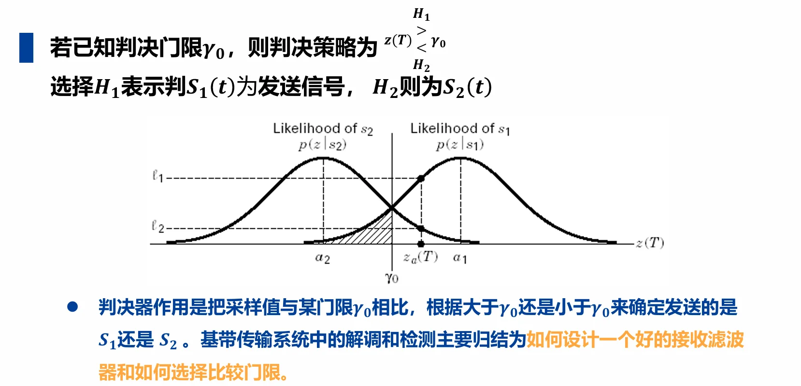
3.3.1 符号解读
先把每个符号对应到通信的实际场景，避免纯数学的抽象感，所有符号都和你之前学的二进制发送信号、高斯噪声完全衔接：
| 符号 | 完整名称 | 通俗物理意义（结合通信场景） |
|---|---|---|
| \(s_1(t)\) | 二进制1对应的发送波形 | 发送端要传二进制1时，在一个码元周期\(T\)内输出的基带波形，无噪声时，接收端抽样值为\(a_1\)（比如双极性码的+1V、单极性码的+3.3V） |
| \(s_2(t)\) | 二进制0对应的发送波形 | 发送端要传二进制0时，在一个码元周期\(T\)内输出的基带波形，无噪声时，接收端抽样值为\(a_2\)（比如双极性码的-1V、单极性码的0V） |
| \(H_1\) | 假设1 | 「接收端认为：当前码元发送的是\(s_1(t)\)（二进制1）」这个判断，是统计里的「假设检验」的简写 |
| \(H_2\) | 假设2 | 「接收端认为：当前码元发送的是\(s_2(t)\)（二进制0）」这个判断，和\(H_1\)是互斥的二选一 |
| \(T\) | 码元周期 | 和你之前学的\(T_s/T_B\)完全一致，是一个二进制码元的持续时间，\(t=T\)就是最佳抽样时刻（匹配滤波器输出信噪比最大的时刻） |
| \(z(T)\) | 抽样时刻的接收信号值 | 接收滤波器输出的信号，在\(t=T\)这个最佳时刻的抽样值，是「发送的理想信号+高斯噪声」的叠加，公式为\(z(T)=a_i + n_0\)（\(a_i\)是\(a_1\)或\(a_2\)，\(n_0\)是高斯噪声的抽样值），是我们要判决的「原始数据」 |
| \(\gamma_0\)（伽马0） | 判决门限（阈值） | 这页PPT的核心！是接收端提前定好的「分界线/标尺」：抽样值超过这个线，就判为1；低于这个线，就判为0。它的取值直接决定判决的正确率（误码率） |
| \(p(z\|s_1)\) | 似然函数（发\(s_1\)的条件概率密度） | 通俗讲：已知发送端发的是\(s_1\)（二进制1）的前提下，收到的抽样值\(z(T)\)等于某个数的概率大小。因为噪声是高斯分布，所以它是一条以\(a_1\)为均值的高斯钟形曲线（图里右侧的曲线） |
| \(p(z\|s_2)\) | 似然函数（发\(s_2\)的条件概率密度） | 同理：已知发送端发的是\(s_2\)（二进制0）的前提下，收到的抽样值\(z(T)\)等于某个数的概率大小。是以\(a_2\)为均值的高斯钟形曲线（图里左侧的曲线） |
| \(a_1\)、\(a_2\) | 无噪声的理想抽样值 | 发送\(s_1\)/\(s_2\)时，没有任何噪声的情况下，接收端在\(t=T\)时刻的理想抽样值，是两条高斯曲线的峰值位置（均值） |
| \(z_a(T)\) | 当前码元的实际抽样值 | 这一时刻，接收端实际拿到的、带噪声的抽样值，是我们要拿去和\(\gamma_0\)做比较的「待测数」 |
| \(\ell_1\)、\(\ell_2\) | 当前抽样值的似然值 | 对应\(z_a(T)\)这个数，在两条似然曲线上的取值：\(\ell_1=p(z_a\|s_1)\)，\(\ell_2=p(z_a\|s_2)\)，代表这个抽样值来自\(s_1\)/\(s_2\)的可能性大小 |
3.3.2 公式解读：
- 如果\(z(T) > \gamma_0\)：我们就选择假设\(H_1\)，也就是判决当前码元发送的是\(s_1(t)\)（二进制1）
- 如果\(z(T) < \gamma_0\)：我们就选择假设\(H_2\)，也就是判决当前码元发送的是\(s_2(t)\)（二进制0）
3.3.3 高斯曲线图解读
1. 坐标轴的含义
- 横轴\(z(T)\)：接收端抽样值的大小，从左到右数值越来越大
- 纵轴：条件概率密度\(p(z|s)\)，数值越高，代表这个抽样值出现的可能性越大
2. 两条高斯曲线的物理意义
- 左侧曲线\(p(z|s_2)\)：发送二进制0时，抽样值的分布
- 峰值在\(a_2\)：因为噪声均值为0，所以发0时，最可能收到的就是\(a_2\)附近的值，离\(a_2\)越远，出现的概率越低
- 右侧曲线\(p(z|s_1)\)：发送二进制1时，抽样值的分布
- 峰值在\(a_1\)：发1时，最可能收到\(a_1\)附近的值
- 为什么两条曲线形状完全一样？因为加性噪声的方差是固定的，和发送的信号无关，只是均值随发送的\(a_1/a_2\)左右平移。
3. 曲线重叠的核心原因：噪声导致的误码根源
两条曲线有重叠区域，这是数字通信误码的唯一根源：
- 发送1时，噪声可能是很大的负值，导致抽样值\(z(T)\)落到\(a_2\)附近（比如发+1V，噪声-1.5V，收到-0.5V）
- 发送0时，噪声可能是很大的正值，导致抽样值\(z(T)\)落到\(a_1\)附近（比如发-1V，噪声+1.5V，收到+0.5V）
- 重叠区域就是「可能判错的区域」，图里的阴影部分，就是发送0、但抽样值超过门限，被判成1的误码概率。
4. 判决门限\(\gamma_0\)的作用：划分判决区域
门限\(\gamma_0\)把横轴切成了两个互斥的区域：
- \(\gamma_0\)右侧：判为1的区域（\(H_1\)区域）
- \(\gamma_0\)左侧：判为0的区域（\(H_2\)区域）
5. 图里\(z_a(T)\)的判决逻辑
图里的\(z_a(T)\)在\(\gamma_0\)的右侧，按照规则判为\(H_1\)（二进制1），这个判决是合理的：
- 这个点对应的\(\ell_1 > \ell_2\)，也就是「这个抽样值来自1的概率，远大于来自0的概率」
- 哪怕它离\(a_1\)还有距离，我们依然选概率更大的那个结果，这就是最大似然判决的核心思想。
3.4 系统核心性能指标：\(E_b/N_0\)
通信系统抗噪声能力的核心表征，定义为每比特信号能量\(E_b\)与噪声单边功率谱密度\(N_0\)的比值，是衡量系统接收性能的黄金指标。
(1) 核心公式：
\(S\)：信号功率，\(N\)：噪声功率，\(W\)：系统带宽，\(R_b\)：信息比特率，\(T_b=1/R_b\)：比特周期
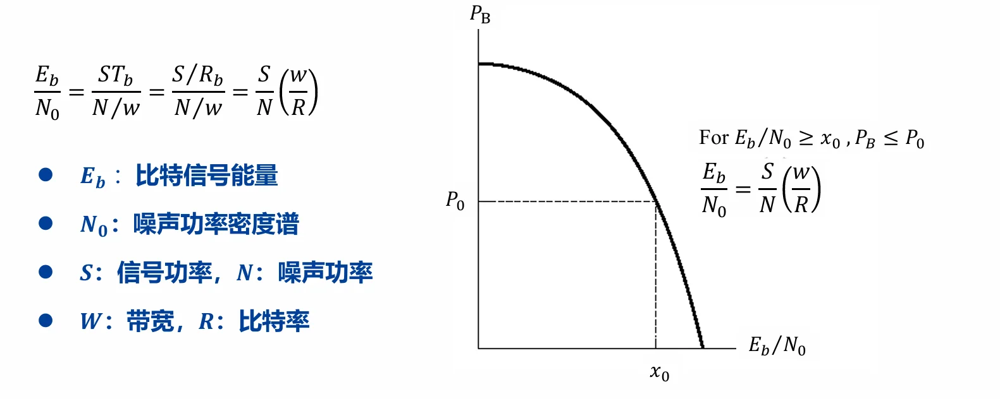
(2) 与信噪比SNR的关系：
(3) 物理意义： 系统达到指定误比特率\(P_B\)时，所需的\(E_b/N_0\)越低，系统接收性能越好。
四、匹配滤波器（最佳接收核心）
匹配滤波器是AWGN信道下，以最大输出信噪比为准则的最佳接收滤波器，是数字通信接收机的核心模块，也是VLSI实现的关键单元。
4.1 最佳接收准则
- 最大输出信噪比准则：使输出信号在判决时刻\(t=T\)的瞬时功率与噪声平均功率之比达到最大
- 最小错误概率准则：使白噪声环境下的判决错误概率最小
- 两个准则在AWGN信道下完全等价
4.2 匹配滤波器的核心定义
对于持续时间为\(0≤t≤T\)的信号\(s(t)\)，其匹配滤波器的冲激响应为：
- 物理意义：匹配滤波器的冲激响应是发送信号\(s(t)\)的时域反转+时移
- 核心性质：信号\(s(t)\)受AWGN干扰时，通过其匹配滤波器，可在\(t=T\)时刻获得最大输出信噪比，最大信噪比为：
\(E\)为信号\(s(t)\)的能量，与波形形状无关
- 该性质的证明见：匹配滤波器输出最大信噪比证明
为什么选择 \(t=T\) 时刻作为判决时刻？
可以把发送信号想象成水龙头开闸放水，放了整整 \(T\) 秒钟。而接收端的匹配滤波器，就是一个用来接水的水桶。
如果在 \(t < T\) 时刻抽样（比如 \(t=0.5T\)）：
水龙头才开了一半，水还没放完。你这个时候就跑去看桶里有多少水，显然你只收集到了信号的部分能量，没有把信号的潜力榨干。
如果在 \(t = T\) 时刻抽样：
水龙头刚刚好关上的那一瞬间！此时，属于这个码元的所有“有用能量”已经全部流进了桶里，一滴都没浪费。此时累积的信号能量达到绝对的最大值。
如果在 \(t > T\) 时刻抽样（比如 \(t=1.5T\)）：
水早就停了，你多等了0.5秒。这0.5秒里，桶里不会增加任何有用的水（信号），但天空中一直在下着灰尘（信道里的高斯白噪声）。你等得越久，混入的噪声就越多，导致信噪比反而下降。甚至，此时下一个水龙头（下一个码元）可能已经打开，脏水（码间串扰）也流进来了。
结论： \(t=T\) 是恰好收集完当前码元所有能量的黄金时刻。
4.3 匹配滤波器的相关器实现
匹配滤波器在\(t=T\)时刻的输出，等价于接收信号\(r(t)\)与发送信号\(s(t)\)的互相关运算：
注：互相关的定义
互相关是两个信号之间的相似度度量，定义为：
证明：
- 工程意义：VLSI实现中，相关器比时域滤波器更易数字实现，是匹配滤波器的常用硬件实现方式
- 二进制最佳接收机：可设计为\(s_1(t)\)和\(s_2(t)\)两路匹配滤波器的差值，\(z(T)>0\)判为\(s_1\)，\(z(T)<0\)判为\(s_2\)
4.4 典型示例
余弦脉冲信号：\(s(t)=\begin{cases}cos2\pi f_0 t, & t\in[0,T] \\ 0, & 其他\end{cases}\)
- 匹配滤波器冲激响应：\(h(t)=cos2\pi f_0 (T-t), \ 0≤t≤T\)
- 输出峰值在\(t=T\)时刻，信噪比达到最大值
理解：假设 \(r(t) = s(t)\)，则：
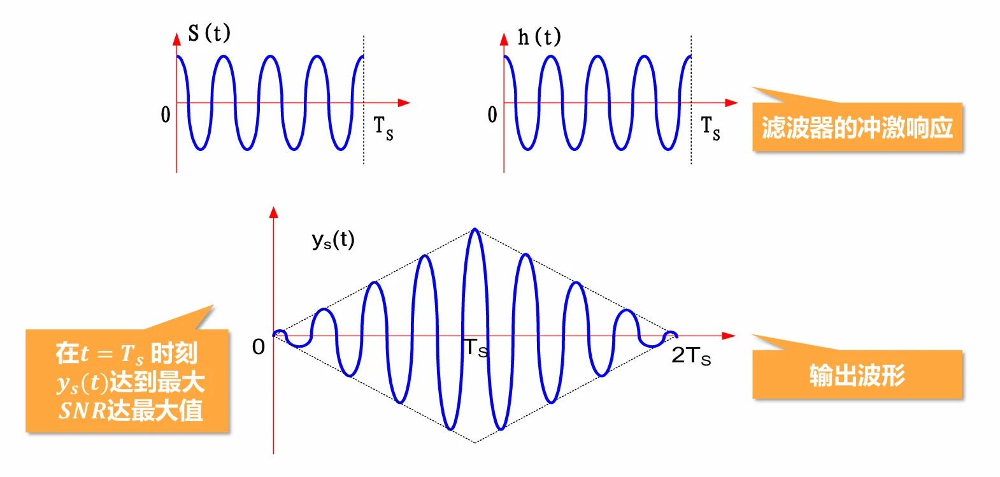
4.5 基于匹配滤波器的接收机
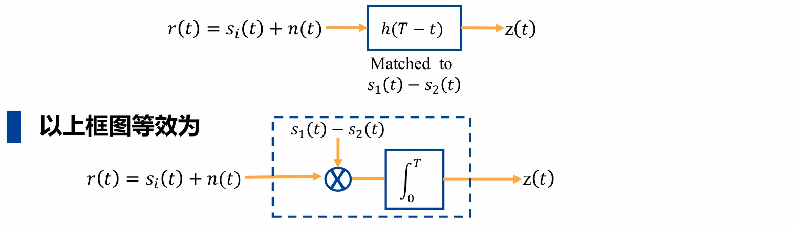
- 当输入为\(s_{1}(t)+n(t)\)时，输出信号值大于零，判\(s_{1}(t)\)出现；
- 当输入为\(s_{2}(t)+n(t)\)时，输出信号值小于零，判\(s_{2}(t)\)出现。
五、高斯噪声干扰下的二进制信号检测
5.1 核心检测准则
5.1.0 先验概率
设M个信号为 \(s_m(t), m = 1,2,\cdots,M\)，相应的先验概率为 \(p(s_m)\)。
如果我们没有收到 \(r(t)\)，则我们总是估计 \(p(s_m)\) 最大的那个信号为最可能被发送。
如果我们收到了信号：
5.1.1 最大后验概率准则（MAP）
选择使后验概率\(p(s_m|r)\)最大的发送信号\(s_m\)作为判决结果，即：
- 核心：结合信号先验概率\(p(s_m)\)和似然函数\(p(r|s_m)\)做判决，是理论上的最优准则
- \(p(s_m|r) = \frac{p(r|s_m) \cdot p(s_m)}{p(r)}\)
5.1.2 最大似然准则（ML）
当发送信号先验等概时（\(p(s_m)=1/M\)），MAP准则等价于ML准则，选择使似然函数\(p(r|s_m)\)最大的信号：
理解：为什么等价？
- 似然函数：信号\(s_i\)的似然函数u定义为条件概率密度函数\(P(z|s_i)\)
- AWGN信道下，ML准则等价于最小距离准则：选择与接收信号欧式距离最小的发送信号
- 工程应用：先验概率未知时，通常采用ML准则，是最常用的检测方式
5.1.3 与最小距离准则的关系
由于对数函数的单调性，所以最大后验概率准则（MAP）也等价于：
由
最大后验概率准则为：
最大似然概率准则（\(ML\)）：
若记 \(D_m \triangleq \| \mathbf{r} - \mathbf{s}_m \|^2\) \(\Leftrightarrow \arg\max_{m} \left\{ -\frac{1}{N_0} \| \mathbf{r} - \mathbf{s}_m \|^2 \right\}\)
最大似然概率准则（\(ML\)）等价于最小距离准则
5.1.4 最大似然准则的理解
最大似然判决准则：若一致信号的先验概率\(P(s_1)\)和\(P(s_2)\)，则信号的最大似然判决准则定义为：
证明：
信号模型：\(z(t) = s_i(t)+n(t), i=1,2\)
观测值的条件概率密度函数：
\(f_{s_1}(z) = \frac{1}{\sqrt{2\pi}\sigma_n}\exp{\{-\frac{1}{n_0}\int_0^{T_s}[z(t)-a_1]^2dt\}}\)
\(f_{s_2}(z) = \frac{1}{\sqrt{2\pi}\sigma_n}\exp{\{-\frac{1}{n_0}\int_0^{T_s}[z(t)-a_2]^2dt\}}\)
假设选取的判决门限是\(z_0^{\prime}\)，那么发送\(s_1(t)\)和\(s_2(t)\)的判决错误概率分别是：
\(P_{s_1}(s_2)=\int_{z_0^{\prime}}^{+\infty} f_{s_1}(z) dz\)
\(P_{s_2}(s_1)=\int_{-\infty}^{z_0^{\prime}} f_{s_2}(z) dz\)
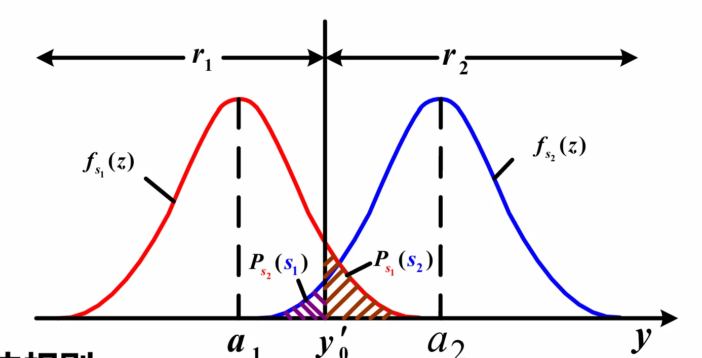
平均误码率：
令其导数等于零：
因此：
- 当信号的先验概率相等时，判决规则简化为：\(P(z_a|s_1) > P(z_a|s_2)\) 则判定为\(s_1\)，反之判定为\(s_2\)，即最大似然准则（ML）
- 对于高斯噪声干扰的信道，最佳判决门限可解的为：\(z(T)\underset{H_2}{\overset{H_1}{\gtrless}}\frac{a_1+a_2}{2}=\gamma_0\)
5.2 最佳判决门限
5.2.1 通用最佳门限
通过最小化平均误码率求导可得，最佳判决门限\(\gamma_0\)满足：
误码率定义：
5.2.2 典型场景门限
(1) 二进制双极性基带信号
\(s(t)=\begin{cases}+a+n(t), & 发1 \\ -a+n(t), & 发0\end{cases}\)
最佳判决门限(令\(\frac{\partial P_B}{\partial \gamma_0}=0\)可以解得)：
先验等概时（\(P(S_1)=P(S_2)=0.5\)），\(\gamma_0=0\)，是最常用的判决门限
(2) 二进制单极性基带信号
先验等概时，最佳门限\(\gamma_0=\frac{a_1+a_2}{2}\)（\(a_1\)为1的幅值，\(a_2\)为0的幅值）
5.3 误码率计算
平均误码率通用公式：
\(P(e|S_1)\)：发\(S_1\)错判为\(S_2\)的概率，\(P(e|S_2)\)：发\(S_2\)错判为\(S_1\)的概率
先验等概二进制双极性信号（AWGN信道）：
- \(Q(x) \approx \frac{1}{\sqrt{2\pi}}\int_x^{\infty} e^{-t^2/2} dt\) 为互补误差函数，单调递减，\(x\)越大，误码率越低
六、码间串扰（ISI）与信道均衡
6.1 码间串扰基础
6.1.1 ISI定义与成因
定义：系统传输特性不理想，导致前后码元波形畸变、拖尾，对当前码元的判决造成干扰
本质成因：信号频带有限 → 时域无限延伸 → 相邻码元在判决时刻相互叠加
定量表达式：
接收信号抽样值（\(t=kT_B\)）：
\(d(t) = \sum_{n=-\infty}^{\infty}a_nh(t-nT_B)\)
\(a_k h(0)\)：当前码元的有用信号
\(\sum_{\substack{n=-\infty \\ n≠k}}^{\infty} a_n h[(k-n)T_B]\)：其他码元对当前码元的串扰，即ISI
\(n_R(kT_B)\)：噪声采样值
6.1.2 ISI的危害
- 直接导致判决错误，提升系统误码率
- 产生误码率地板效应：即使信噪比无限提升，误码率也无法下降到0，成为系统性能的瓶颈
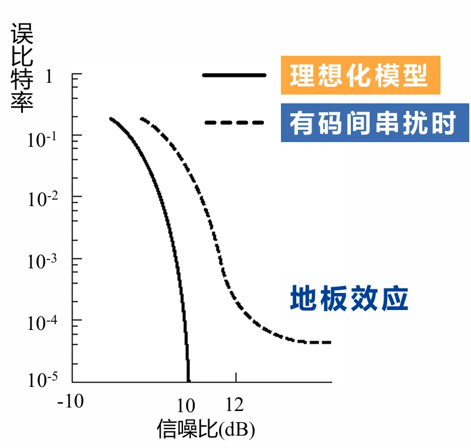
6.2 无码间串扰的时域条件
要完全消除抽样时刻的ISI，需满足：
- 物理意义：本码元在抽样时刻取最大值，其他所有码元在该抽样时刻的取值均为0，无叠加干扰
6.3 信道均衡滤波器
均衡器的核心作用：补偿信道的非理想特性，减小甚至消除码间串扰，是基带接收机的关键模块。
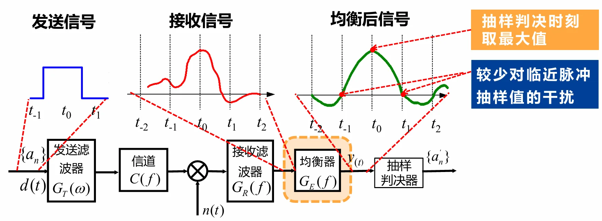
6.3.1 核心实现：有限长横向滤波器
结构：抽头延迟线+可调系数乘法器+加法器，\(2N+1\)个抽头，抽头间隔为码元周期\(T_B\)
输出表达式（\(t=kT_B\)时刻）：
\(c_i\)：第\(i\)个抽头的系数，\(x(t)\)：均衡器输入信号（接收滤波器输出）
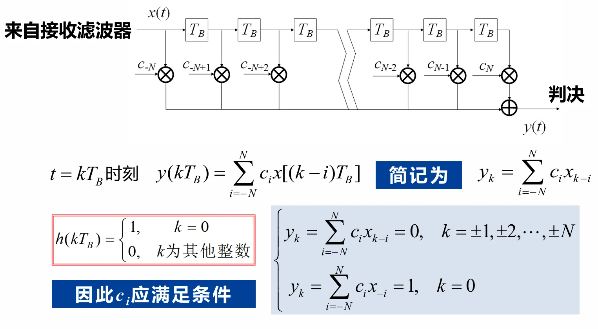
6.3.2 迫零均衡器
最经典的均衡器设计方法，核心是强制除\(k=0\)外，其他抽样时刻的输出均为0，消除抽样时刻的ISI。
抽头系数满足的方程组：
用矩阵表示为：
求解方式： 由输入信号的抽样值构成托普利兹矩阵，求解线性方程组得到抽头系数\(c_i\)
工程特性：
- 抽头数越多，均衡效果越好，但硬件复杂度（乘法器、加法器数量）越高，需做性能-复杂度权衡
- 有限抽头数无法完全消除所有ISI，只能最小化抽样时刻的ISI
6.3.3 均衡效果评价：峰值失真准则
- 输入峰值失真：\(D_0 = \frac{1}{x_0} \sum_{\substack{k=-\infty \\ k≠0}}^{\infty} |x_k|\)
- 输出峰值失真：\(D = \frac{1}{y_0} \sum_{\substack{k=-\infty \\ k≠0}}^{\infty} |y_k|\)
- 评价指标：\(\frac{D}{D_0}\)，比值越小，均衡效果越好
七、本章核心总结
- 基带传输是数字通信的基础：无论是基带直传还是带通传输，都必先完成数字序列到基带波形的映射，基带波形设计直接决定系统传输性能。
- AWGN信道下的最佳接收：匹配滤波器实现最大输出信噪比，最大似然检测实现最小错误概率，二者共同构成最佳接收机，是VLSI数字通信接收机设计的核心框架。
- 码间串扰是系统性能的核心瓶颈：非理想信道特性导致ISI，通过横向均衡器（尤其是迫零均衡器）可有效抑制ISI，需在性能和硬件复杂度间做权衡。
- 系统性能核心链路：基带波形设计 → 发送/接收滤波 → 匹配滤波最佳接收 → 抽样判决 → 均衡抑制ISI，每个环节都直接影响最终的误码率性能。
- VLSI实现重点：匹配滤波器的相关器实现、均衡器的抽头系数求解与硬件映射、判决器的低复杂度设计，是本章内容的工程落地核心。